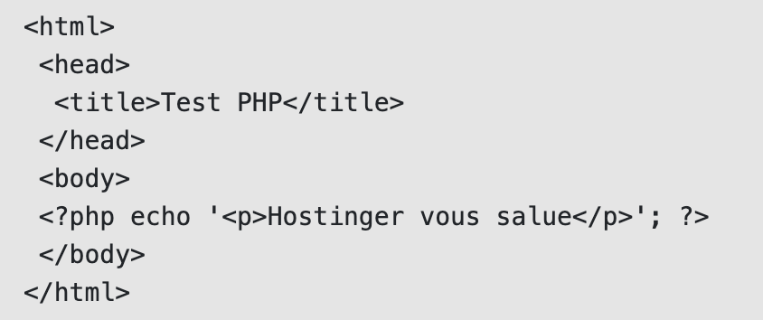
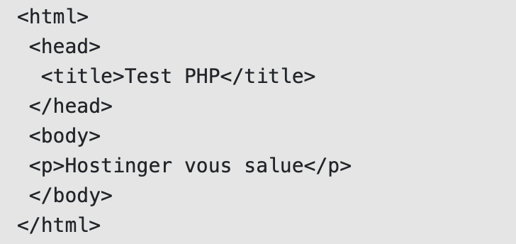

C'est quoi ?
Il s’agit d’un langage de script créé pour les communications côté serveur. Il peut donc gérer diverses fonctions côté serveur, telles que la collecte de données de formulaires, la gestion de fichiers sur le serveur, la modification de bases de données, et bien plus encore.
Disons que si vous ne voulez pas que les gens voient votre code source, vous pouvez le cacher avec ce langage de script. Il suffit d’écrire le code dans un fichier PHP, de l’incorporer dans du HTML et les gens ne connaîtront jamais le contenu original.
Un autre avantage de cette fonctionnalité particulière est que vous devez utiliser le même balisage HTML de manière répétée. Plutôt que de le réécrire encore et encore, il suffit d’écrire le code dans un fichier PHP. Chaque fois que vous devez utiliser du HTML, insérez le fichier PHP et c’est parti. Un exemple de page PHP peut être vu sur Facebook. Ouvrez la page d’accueil et vous verrez que l’URL se termine par .php (facebook.com/home.php). En d’autres termes, cette page est un fichier PHP (home.php) qui contient un mélange de code PHP et HTML. Voici un exemple simple qui vous permettra d’en savoir plus sur la façon dont un fichier PHP est écrit :
Si vous placez ce fichier PHP (salutations.php) dans le répertoire racine de votre site, vous le trouverez sur votresite.com/salutations.php Le résultat de ce fichier PHP en HTML ressemblerait à ceci
